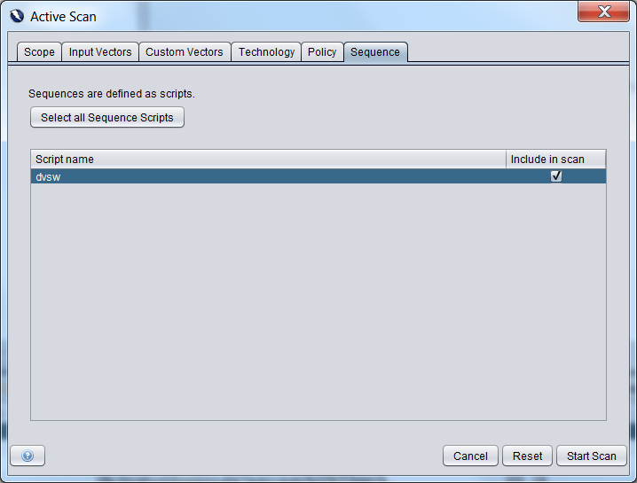

Sequence Scanner
This add-on facilitates the recording and scanning sequences of requests.
In some web applications it is necessary for particular events or pages to be accessed or completed in a certain order.
By recording a sequence and then scanning it, it is possible to ensure such flows happen in an expected manner.
Creating Sequences
One sequence script should be created for each multi-step operation in the application/site being tested.
There are two options for creating sequences:
- In either the Sites tree or History tab select the requests you wish to have included, right click, and
use "Add To Zest Script" (either choosing to create a new script or adding to an existing Sequence script).
- From the main tool bar, use the "Record a New Zest Script..." button, selecting "Sequence" as the type.
Scanning
When a new Active Scan is created there is a "Sequence" tab in which you can choose the sequence(s) to be scanned.
Note: The Sequence tab is only visible when "Show advanced options" is selected.
For Example:

See also
ZAP Multi-step Blog